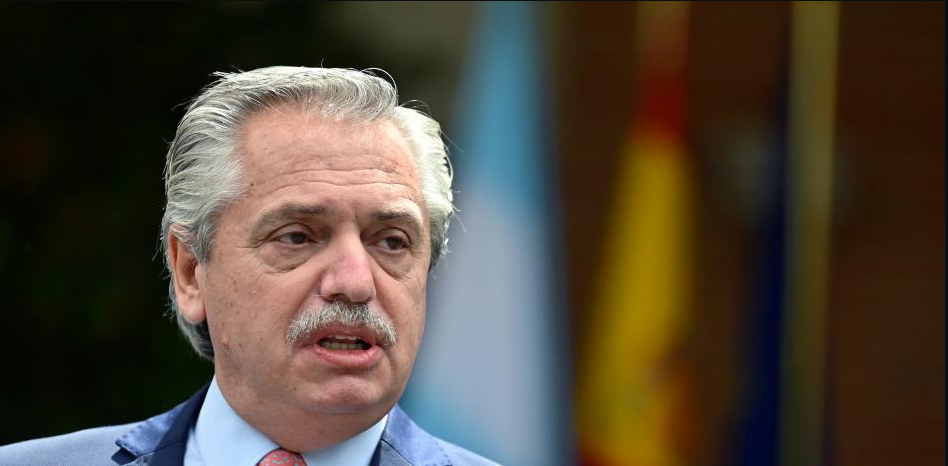
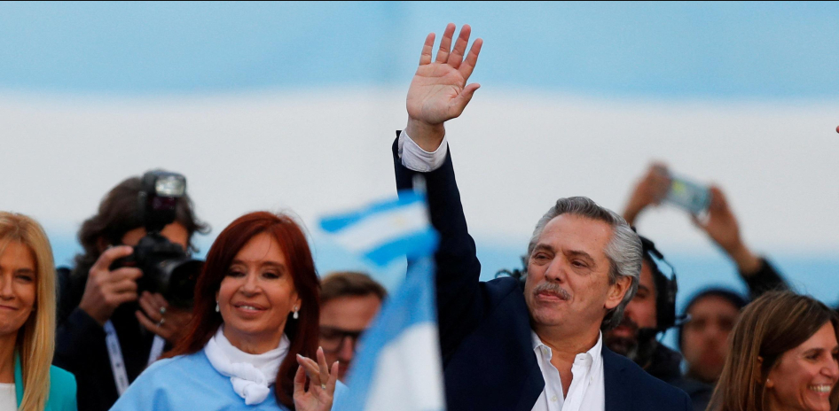

Noticias generales

Elon Musk aborda anuncio de Boric sobre la Política Nacional del Litio: “El mineral es muy común, lo que importa es la capacidad de refinación”
Categoría: Internacionales
El jueves, a través de una cadena nacional, el Jefe de Estado anunció la política nacional para este metal alcalino, el que incluye, entre varios puntos, la creación de una Empresa Nacional del Litio, la que participará de todo el ciclo productivo. Otro de los puntos anunciados fue que la exploración, explotación y agregación de valor, será en base a una colaboración público-privada...
Leer Noticia completa
Película chilena 1976 y serie dirigida por Andrés Wood se llevan galardones en los Premios Platino
Categoría: Peliculas nacionales
a película 1976 y la serie Noticia de un secuestro triunfaron en los Premios Platino. La primera es una cinta dirigida por Manuela Martelli y ganó el galardón a "Mejor Ópera Prima de Ficción Iberoamericana". En tanto, la realización del chileno Andrés Wood se quedó con cuatro de las seis nominación que tenía.
Leer Noticia completaNoticias principal
El peronismo busca candidato en turbulento año de elecciones: sus dos figuras dieron paso al costado
Categoría: Internacionales
luego que Alberto Fernández y Cristina Fernández de Kirchner anunciaran que no se presentarán a las elecciones presidenciales de Argentina, el peronismo busca con urgencia un candidato para revalidad el triunfo de 2019. El gobernador de la Provincia de Buenos Aires y el actual ministro de Economía son parte de los nombres que suenan para batallar por la Casa Rosada.
La palabra más repetida durante las últimas horas entre las filas peronistas es “orden”. Una reorganización necesaria para un movimiento político que enfrenta este octubre elecciones presidenciales en Argentina y que, por el momento, no tiene ningún aspirante fuerte que suene para intentar revalidar la victoria obtenida en 2019 por el Frente de Todos, con Alberto Fernández y Cristina Fernández de Kirchner a la cabeza.
Estas dos figuras han descartado ya ser candidatos presidenciales para los comicios de octubre. El presidente lo hizo este 21 de abril, en un movimiento esperado por muchos y catalogado de “lógico” dentro del peronismo debido a la baja popularidad del mandatario. Y Cristina Fernández de Kirchner, vicepresidenta y figura más reconocida en el Frente de Todos hizo lo mismo en diciembre de 2022 después de que recibiera una condena de seis años de prisión por corrupción. Estas decisiones dejan al peronismo sin un candidato claro a la presidencia, pero también reflejan la profunda crisis interna que ha sufrido el movimiento en estos cuatro años de Gobierno, en donde el kirchnerismo -la facción más a la izquierda del peronismo y liderada por Cristina Fernández- ha roto por completo con Alberto Fernández, a quien han acusado de la baja popularidad del Ejecutivo y de ser un “traidor” por aceptar al Fondo Monetario Internacional una refinanciación de la deuda argentina, una estrategia arriesgada para el futuro económico del país.
¿Primarias o consenso?
El paso al costado de Alberto Fernández ha hecho que, en la política argentina, se abra el primer interrogante en torno a cómo se elegirá a la persona que reciba su testigo como líder del Frente de Todos. Existen dos posibilidades: la primera es que el peronismo vuelva a llegar a un acuerdo y presente a un candidato unitario y la segunda es que varios aspirantes acudan a las elecciones primarias, abiertas, simultáneas y obligatorias (PASO) que se celebrarán el próximo mes de agosto para dirimir quién será el líder. En 2019, la estrategia seguida fue la primera. El kirchnerismo, con Cristina Fernández a la cabeza, escogió la fórmula de llevar a la expresidenta como candidata vicepresidencial y a Alberto Fernández como presidenciable para lograr captar el voto del peronismo progresista y conservador con el objetivo de tumbar las aspiraciones de reelección de Mauricio Macri. Y aunque la estrategia funcionó, en los años siguientes el Gobierno no mostró esa unidad y desgastó la coalición.
El peronismo busca candidato en turbulento año de elecciones: sus dos figuras dieron paso al costado https://t.co/zuek0B6gc8
— BioBioChile (@biobio) April 23, 2023